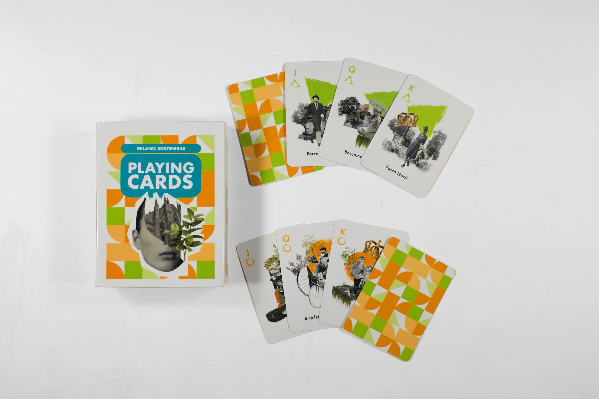
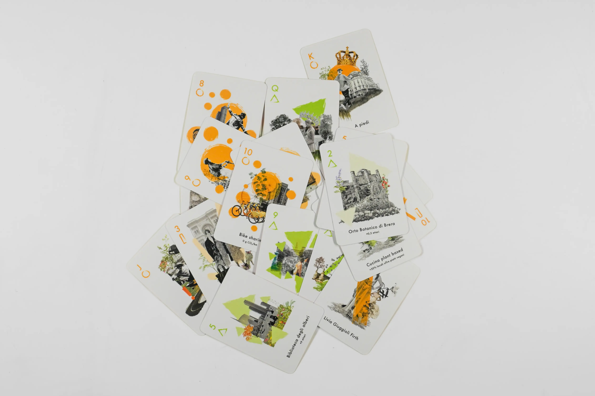
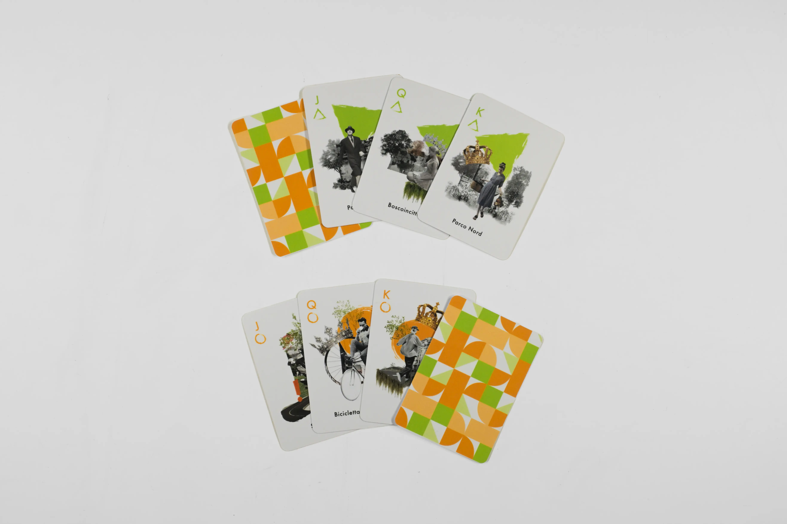

This 54-card deck was designed with the objective of narrating the behavior of a sustainability-oriented Milanese citizen. Every detail has been carefully crafted to merge aesthetics with meaning, transforming a simple entertainment tool into an effective medium for awareness.



The four suits of the deck represent the pillars of urban sustainability, each identified by a distinct geometric shape. Public transport, represented by the circle, symbolizes sustainable mobility; green areas, depicted by the triangle, evoke the importance of nature and urban greenery; fashion, represented by the rectangle, interprets a new ethical and conscious approach to consumption; and finally, the food theme, represented by the square, celebrates sustainable dietary choices and the promotion of local excellence.
Each card follows a unique visual journey: the suits evolve hierarchically through the addition of geometric elements, collage, and more intense colors, symbolically representing progress and the positive impact of individual best practices. In the fashion and food suits, the Jack, Queen, and King figures represent the key protagonists of these sectors, adding a further layer of meaning to the deck.
This deck of cards is more than just a game; it is an invitation to reflect on the importance of adopting a sustainable lifestyle. By merging entertainment and awareness, we aim to spread a positive message: every gesture, even the smallest, can contribute to building a more sustainable future for all.